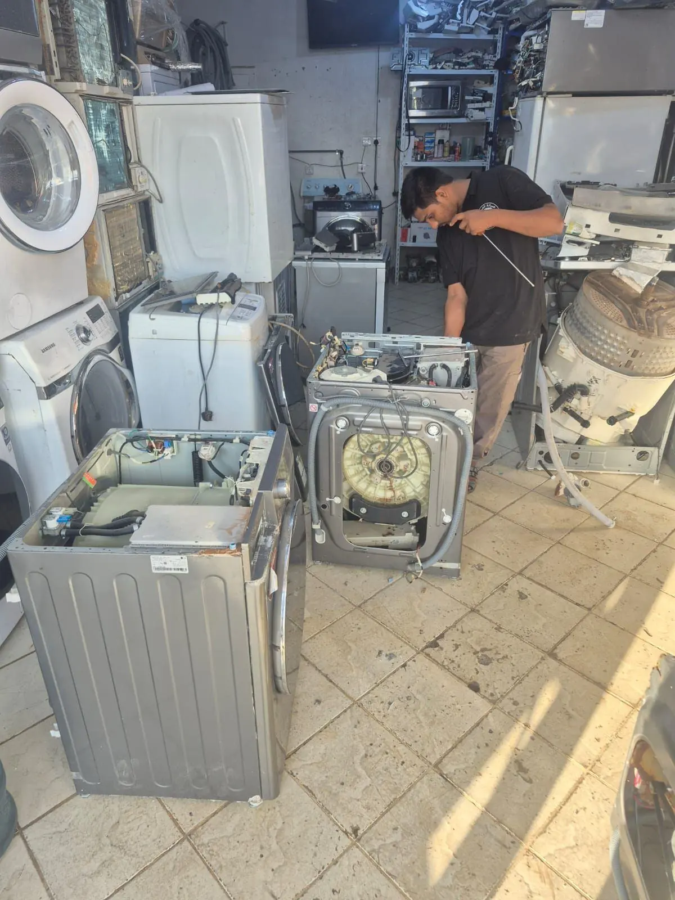

كيف تختار خدمة تصليح غسالات موثوقة في الرياض

أغلب الناس يبحثون عن خدمة تصليح غسالات في الرياض بعد أن تتوقف الغسالة فعلاً وفيها ملابس مبللة. وفي هذه اللحظة يسهل قبول أول عرض تسمعه. بضع دقائق من الأسئلة قبل الزيارة قد توفر عليك دفع المبلغ مرتين. استخدم هذه القائمة أثناء المكالمة وعند وصول الفني وعند المقارنة بين العروض.
ماذا تسأل في المكالمة الأولى؟
الفني الجيد يسألك هو أيضاً. توقع أن يسأل عن الماركة والموديل وما الذي تفعله الغسالة. جهّز ملصق الموديل، وغالباً تجده على إطار الباب أو في الخلف أو على حافة فتحة الباب. وإذا لم يسألك أحد أي سؤال، فقد تكون الزيارة مجرد تخمين.
صف العطل بكلمات بسيطة: لا تشتغل، لا تصرّف الماء، تسرّب، أو يظهر كود على الشاشة. ثم اسأل هذه الأسئلة:
- هل ستخبرني بالعطل وبالتكلفة قبل أن تبدأ أي عمل؟
- هل هناك رسوم على الزيارة أو الفحص، وماذا يحدث لها إذا وافقت على التصليح؟
- هل تتعامل مع ماركة غسالتي ونوعها، أمامية أو علوية؟
- هل يوجد ضمان على التصليح، وماذا يشمل؟
- هل تأتي إلى البيت، أم يجب أن أحضر الغسالة بنفسي؟
الفحص أولاً ثم السعر
أي سعر يُقال في الهاتف قبل أن يرى أحد الغسالة هو تقدير فقط. أعطال كثيرة تبدو متشابهة من الخارج. الغسالة التي لا تعصر قد يكون فيها مضخة مسدودة أو سير مهترئ أو مشكلة في المحرك أو ببساطة خلل في توازن الحمولة. والتكلفة تختلف كثيراً بين كل حالة.
الترتيب الصحيح: يفحص الفني الغسالة، يحدد العطل، يشرحه لك، يذكر التكلفة، ثم يبدأ فقط إذا وافقت. وإذا بدأ أحد بفك الغسالة والعمل قبل أي شرح، أوقفه بأدب. ولمعرفة كيف تتكوّن التكلفة عادة، اقرأ دليلنا عن تكلفة تصليح الغسالات في الرياض.
القطع والأجرة: ما الذي يجب أن يُشرح لك؟
أنت تدفع مقابل شيئين: العمل والقطعة. العرض الواضح يفصل بينهما، أو على الأقل يبيّن ما الذي يشمله السعر. ويجب أن تفهمه دون أي معرفة فنية.
- ما الذي تعطّل بالضبط، بكلمات تفهمها.
- أي قطعة تحتاج إلى تبديل أو إصلاح.
- هل القطعة جديدة أم مستعملة أم مجددة.
- ما الذي تشمله أجرة العمل.
- هل الغسالة تستحق التصليح أصلاً. الفني الأمين يقول لك أحياناً إنها لا تستحق.
كيف يبدو الضمان الواضح؟
الضمان لا ينفع إلا إذا عرفت ما يغطيه. اطلب أن يُذكر بوضوح، ويفضّل كتابةً أو في رسالة تحتفظ بها، مثل واتساب.
تأكد من أربعة أمور: مدة الضمان، وهل يشمل القطعة أو الأجرة أو الاثنين، وما الذي يلغيه. قد يلغي الضمان تضرر الغسالة بالماء أو فتحها من فني آخر. وإذا كان الجواب غامضاً، مثل لا تشيل هم، فاعتبره بلا ضمان.
فني مستقل أم مركز صيانة الوكيل؟
كلاهما قد يكون الخيار المناسب، والأمر يعتمد على غسالتك.
مركز صيانة الماركة مناسب إذا كانت الغسالة ما زالت تحت ضمان الشركة، لأن التصليح عند طرف آخر قد يؤثر على هذا الضمان. وقد يناسب أيضاً الموديلات الحديثة جداً أو النادرة. لكن قد تنتظر موعداً أطول، وقد تضطر إلى نقل الغسالة بنفسك.
والفني المستقل غالباً مناسب للغسالات التي انتهى ضمانها، وللموديلات القديمة، ولمن يريد فنياً يأتي إلى البيت ويعطيه التكلفة بوضوح في نفس الزيارة. اسأله عن الماركات التي يعمل عليها، واطلب منه الصراحة في مصدر القطع. وإذا كنت تتردد بين التصليح والاستبدال فاقرأ دليلنا عن التصليح أو الاستبدال.
علامات تستدعي الحذر
لا تثبت أي علامة منها وحدها أن الخدمة سيئة. لكن وجود اثنتين أو ثلاث معاً سبب كافٍ لتعتذر وتبحث عن غيره.
- يطلب الدفع كاملاً قبل فحص الغسالة أو إصلاحها.
- لا يسمّي العطل، ويكتفي بقول إن المشكلة كبيرة.
- يبدّل القطع واحدة بعد أخرى دون أن يختبر شيئاً.
- يتغير السعر في منتصف العمل دون تفسير جديد.
- لا يوجد ضمان، أو يوجد ضمان لا يستطيع شرحه.
- يضغط عليك لتقرر فوراً، أو يقول إن العرض ينتهي اليوم.
- يرفض أن يريك القطعة القديمة التي تم تبديلها.
كيف تقارن بين عرضين؟
الرقم الأقل ليس دائماً التصليح الأرخص. ضع العرضين جنباً إلى جنب واسأل الأسئلة نفسها للطرفين.
هل الفحص مشمول أم يُحسب منفصلاً؟ هل القطعة جديدة أم مستعملة؟ كم مدة الضمان؟ هل السعر يشمل الأجرة والزيارة؟ العرض الأرخص لأنه بلا ضمان أو بقطعة مجهولة قد يكلفك أكثر بعد شهر.
وقارن أيضاً مدى وضوح الشرح عند كل طرف. من يشرح العطل ببساطة غالباً يفهمه أفضل.
كيف تقرأ تقييمات قوقل بحذر؟
التقييمات مفيدة، لكن اقرأها بعين ناقدة. لا تكتف بعدد النجوم، بل اقرأ ما يكتبه الناس فعلاً.
ابحث عن تقييمات تذكر العطل وما تم عمله وكيف شُرحت المشكلة. التفاصيل المحددة أنفع من كلمة واحدة مثل ممتاز. واقرأ التقييمات ذات ثلاث نجوم وأقل، وانظر كيف يرد عليها صاحب الخدمة. الرد الهادئ المفيد يقول لك الكثير. وانتبه إذا ظهرت تقييمات كثيرة في وقت قصير جداً وبنفس الكلمات.
وأخيراً تأكد أن الاسم ورقم الهاتف والمنطقة في الصفحة تطابق من اتصل بك.
هكذا نعمل
إصلاح الغسالات الأوتوماتيكية خدمة مستقلة تصل إلى بيتك في الرياض. يفحص الفني الغسالة عندك، ويخبرك بالعطل والتكلفة، ولا يبدأ إلا بعد موافقتك. اتصل أو راسلنا على واتساب 966591161916+ مع ذكر الماركة والعطل.
الأسئلة الشائعة
الأسلم أن تدفع بعد إنهاء العمل وتجربة الغسالة. وإذا احتاج الأمر إلى طلب قطعة، فقد يكون عربون صغير متفق عليه معقولاً، لكن اطلب ذكر المبلغ وسببه كتابةً.
ليس دائماً. المهم أن يُشرح العطل والتكلفة قبل بدء العمل. اسأل ماذا يحدث لرسوم الزيارة إن وافقت على التصليح.
يستطيع، لكن التصليح خارج الوكيل قد يؤثر على ضمان الشركة. راجع شروط ضمانك أولاً. وإذا كانت الغسالة مغطاة، فمركز صيانة الماركة هو الطريق الأسلم غالباً.
الماركة والموديل ووصفاً مختصراً للعطل وصورة لأي كود يظهر على الشاشة. ومقطع فيديو قصير للمشكلة يساعد أيضاً.